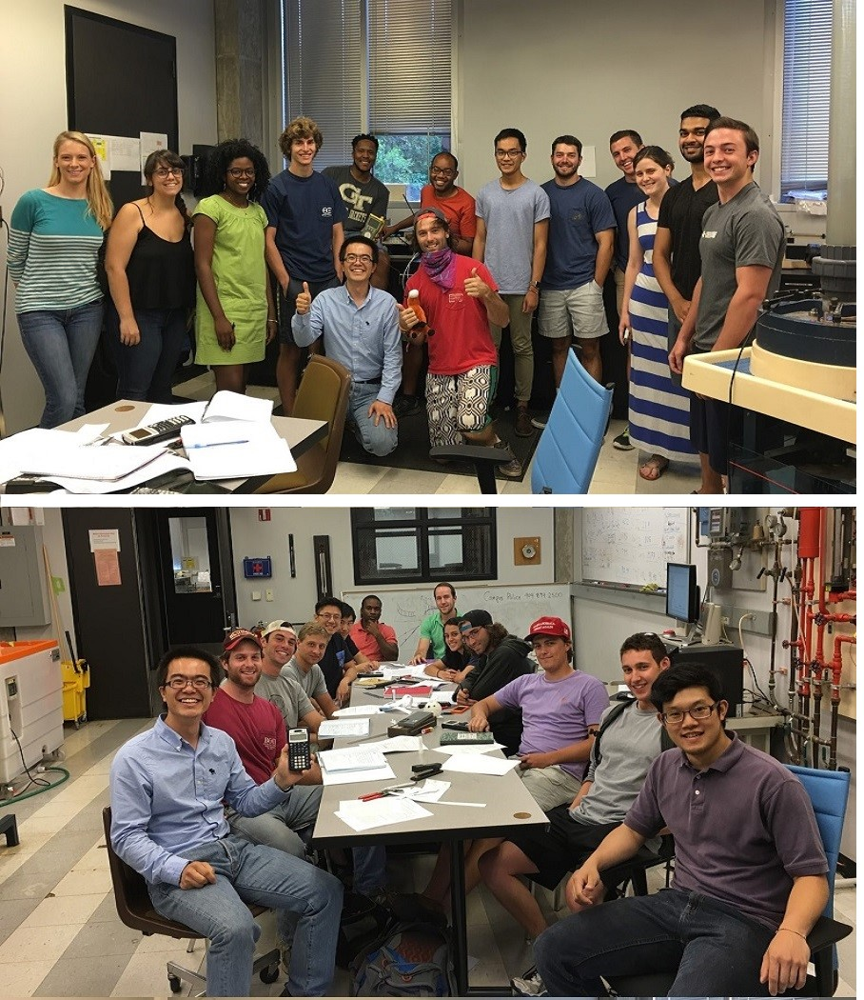
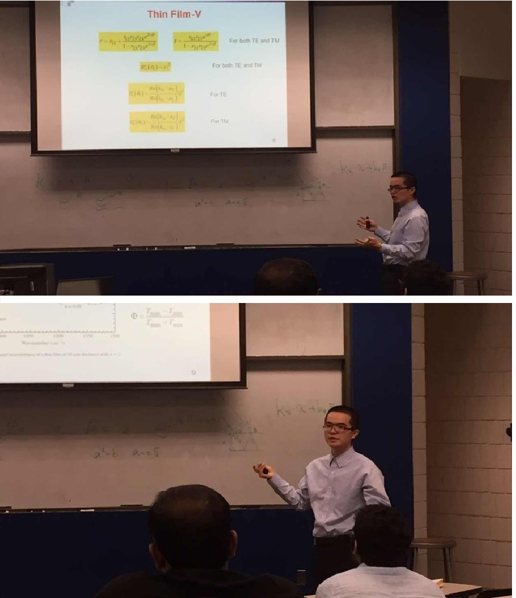

|   |
Lab instructor of 8 comprehensive thermal-fluids labs to over 200 students. Skills developed include
• Coordinate instructors (Profs. Zhuomin Zhang and Yogendra Joshi), school, and students
• Organize weekly TA meetings, train new TAs, and maintain lab instruments
• Design grading guidelines to evaluate students’ performance including lab reports, homework, and notebooks
• Teach lab sections on experimental theory and data analysis including uncertainty and regression analysis
• Communicate and coordinate with students with different backgrounds
• Deliver three lectures on experimental theory to over 100 students
"He knew his subject well and was able to be relaxed and conversational while teaching and we were able to complete lab procedures and have fun."
"Engaging students and being able to have fun with the students."
"He was very well versed in the material he was teaching. This understanding transferred to effective teaching."
"Bo obviously has a mastery of the subject material associated with his lab. He easily conveyed complex topics and took time to ensure we, the student, understood each topic. Bo has a very positive attitude in the lab and I thoroughly enjoyed learning from him. If I had the option, I would choose to take more courses with Bo as my instructor."
See Students' Full Evaluations
Teaching practicum under mentorship of Prof. Zhuomin Zhang. Responsibilities include
• Design and prepare materials on fundamentals of thermal radiation
• Deliver three lectures (totally around 4 hours)
• Prepare homework related to fundamentals of thermal radiation
• Hold office hours to help the students to finish the homework
"Very knowledgeable on topic despite being difficult. Effectively could answer all questions asked."
"Highly structured, well organized, logical steps made sense."
"Very well versed in the course material. Exceptional presentation and well prepared."
"Bo put noticeable effort into simplifying and rephrasing complex concepts instead of repeating material from the text."
See Students' Full Evaluations